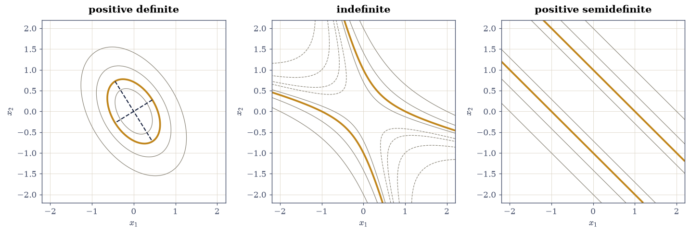

3.3 Positive Definiteness, Quadratic Forms, and Cholesky#
Notebook overview#
§3.2 gave symmetric matrices real eigenvalues. Requiring those eigenvalues to be positive is a small-sounding extra condition with disproportionate consequences, and this notebook is about how many apparently unrelated statements turn out to be that one condition in disguise.
A symmetric \(A\) is positive definite when \(\mathbf{x}^{\top}\!A\mathbf{x} > 0\) for every \(\mathbf{x} \ne \mathbf{0}\). Equivalently: all its eigenvalues are positive; all its leading principal minors are positive; it has a Cholesky factorization \(A = LL^{\top}\); and it is \(G^{\top}G\) for some \(G\) with independent columns. Five tests, one property — and they are not equally useful in floating point, which is a distinction the notebook makes carefully.
The geometry is the reason the definition is natural. The level set \(\mathbf{x}^{\top}\!A\mathbf{x} = 1\) is an ellipse exactly when \(A\) is positive definite, with semi-axes \(1/\sqrt{\lambda_i}\) along the eigenvectors; drop definiteness and it becomes a hyperbola or a pair of lines. So a positive definite matrix is one that defines a sensible notion of squared length, which is what makes it the right object for an energy, a covariance, or a kernel.
The algorithm is Cholesky, and it is the best-behaved factorization in this course: half the cost of \(LU\), no pivoting needed, no growth factor to worry about, and — usefully — it fails precisely when the matrix is not positive definite, which turns a factorization into a test. It also generates correlated random vectors in one line, which is how every Gaussian sample in the rest of this course is drawn.
How to read a check. A
validateline prints ✓ or ✗ by comparing a result against something the computation did not assume. A ✗ flags a mismatch to investigate, never a verdict on its own.
Theory in brief#
The definition#
A symmetric \(A \in \mathbb{R}^{n\times n}\) is positive definite if
positive semidefinite if \(\ge 0\) is allowed, negative definite if the inequality reverses, and indefinite if \(\mathbf{x}^{\top}\!A\mathbf{x}\) takes both signs. The scalar \(\mathbf{x}^{\top}\!A\mathbf{x}\) is the quadratic form, and by §3.2 it equals \(\sum\lambda_ic_i^2\) in eigenvector coordinates — so its sign is decided entirely by the signs of the eigenvalues.
Five equivalent tests#
For symmetric \(A\), the following are equivalent:
Test (iii) is Sylvester’s criterion, and it is the one that fails most instructively: it needs leading minors, and checking all \(2^n - 1\) principal minors is a different (also valid) criterion, while checking only \(\det A > 0\) is no criterion at all — \(\operatorname{diag}(-1,-1)\) has determinant \(+1\).
Cholesky#
The factorization in (iv) is
computed by the recurrence, for \(j \le i\),
It costs \(n^3/3\) flops, half of \(LU\), because symmetry means only one triangle is touched. It needs no pivoting: the growth factor is exactly 1, since every \(\ell_{jk}^2\) in the first formula is subtracted from \(a_{jj}\) and the result must stay positive, which bounds every entry of \(L\) by \(\sqrt{a_{jj}}\). That is a guarantee \(LU\) cannot make, as §1.2 measured with Wilkinson’s matrix. And the square root under the radical goes negative exactly when \(A\) is not positive definite, so the algorithm doubles as the sharpest of the five tests.
The energy ellipse#
For positive definite \(A\), the level set
is an ellipsoid whose principal axes point along the eigenvectors \(\mathbf{q}_i\) with semi-axis lengths \(1/\sqrt{\lambda_i}\). A large eigenvalue therefore gives a short axis: the form grows fastest in the direction it is stiffest. Indefinite \(A\) gives a hyperbola instead, and semidefinite \(A\) gives an unbounded strip, so the shape of the level set is a complete diagnosis.
Congruence and Sylvester’s law of inertia#
For invertible \(C\), the map
is a congruence. It is what happens to a quadratic form under a change of variables \(\mathbf{x} = C\mathbf{y}\), and unlike a similarity transformation it does not preserve the eigenvalues. What it does preserve is
the counts of positive, zero and negative eigenvalues — Sylvester’s law of inertia. So positive definiteness is a property of the quadratic form itself and not of the coordinates it is written in, which is exactly why it is worth having a name.
Gram matrices, covariance, and sampling#
For any \(G\),
so \(G^{\top}G\) is always positive semidefinite, and positive definite exactly when \(G\) has independent columns. That single line explains why every Gram matrix, every covariance matrix and every kernel matrix in this course is guaranteed to be at least semidefinite.
Run the implication backwards and Cholesky becomes a sampler. If \(\mathbf{z}\) has independent standard normal entries and \(\Sigma = LL^{\top}\), then
For a 2-D Gaussian the quantity \(\mathbf{x}^{\top}\Sigma^{-1}\mathbf{x}\) is \(\chi^2\) with 2 degrees of freedom, so the fraction of samples inside the \(k\sigma\) ellipse has the closed form
Setup#
Data and instruments only: the worked matrices and an inertia meter. The Cholesky factorizer is built in Exercise 2, where it is the lesson.
The Setup below holds this notebook’s data and instruments — nothing you are asked to build. It is collapsed so the building stays yours; expand it whenever you want the details.
Exercise 1: Five tests, one property, and two of them unusable#
Eq. 160 lists five conditions that are equivalent as theorems. This exercise applies all five to four matrices — one of each kind — and finds that two of the tests behave badly enough in floating point that they should not be used as tests at all.
The suite, all symmetric \(3\times3\) and available as SUITE:
Part a) Apply test (ii). For each matrix compute np.linalg.eigvalsh and
report whether every eigenvalue exceeds \(10^{-12}\). The spectra are
\(\{1.786, 4.539, 5.675\}\), \(\{-1, 3, 3\}\), \(\{0, 2, 2\}\) and
\(\{-4, -2, -1\}\), so only the first passes.
Part b) Apply test (iii), Sylvester’s criterion, computing the three
leading principal minors np.linalg.det(A[:k, :k]) for \(k = 1, 2, 3\). They
are \((4, 11, 46)\), \((1, -3, -9)\), \((1, 0, 0)\) and \((-2, 5, -8)\). Confirm the
verdict agrees with Part a) on all four, and note the trap: the last matrix
has a positive second minor and is negative definite, so no single minor
decides anything.
Part c) Apply test (iv). Try scipy.linalg.cholesky(A, lower=True) inside
a try/except and record whether it succeeded. Confirm it agrees with Parts
a) and b) on all four, raising LinAlgError on the three that are not
positive definite — including the semidefinite one, where the factorization
exists in exact arithmetic but the algorithm hits a zero pivot.
Part d) Now test (i), by sampling, and watch it fail. Draw \(2\times10^{4}\) random unit vectors and report \(\min_{\mathbf{x}}\mathbf{x}^{\top}\!A\mathbf{x}\) for each matrix. For the semidefinite matrix the sampled minimum is \(+1.1\times10^{-4}\) — positive — so sampling declares it positive definite, and it is not. Confirm the sampled minimum is positive, and confirm that the true minimum, \(\lambda_1 = 0\), is not. A property quantified over all \(\mathbf{x}\) cannot be established by checking finitely many of them, and this is the concrete case.
Part e) Apply test (v) where it applies. For the two matrices that are at
least semidefinite, build \(G = Q\sqrt{\Lambda}Q^{\top}\) from eigh with
eigenvalues below \(100\,\varepsilon\,|\lambda|_{\max}\) set to exactly zero
(a bare clip at \(0\) keeps \(+10^{-16}\) rounding survivors, whose square
roots masquerade as rank), and confirm
\(G^{\top}G = A\) to \(10^{-14}\). Report \(\operatorname{rank}(G)\): it is 3 for
the definite matrix and 2 for the semidefinite one, which is test (v)’s
“independent columns” clause doing the work.
Part f) Summarise the verdicts in a table and confirm all four reliable tests — eigenvalues, minors, Cholesky, and the rank of \(G\) — agree on every matrix in the suite, while sampling gets one of the four wrong.
matrix eigenvalues minors chol min x^T A x
positive definite [1.7857 4.5392 5.6751] [ 4. 11. 46.] True +1.786479
indefinite [-1. 3. 3.] [ 1. -3. -9.] False -0.999032
positive semidefinite [0. 2. 2.] [1. 0. 0.] False +0.000111
negative definite [-4. -2. -1.] [-2. 5. -8.] False -3.999990
matrix lambda>0 minors>0 cholesky sampled>0 AGREE?
positive definite True True True True True
indefinite False False False False True
positive semidefinite False False False True True
negative definite False False False False True
the three reliable tests agree on every matrix : True
sampling gets these wrong : ['positive semidefinite']
for the semidefinite matrix the sampled minimum is +1.114e-04 — positive — while the
true minimum is lambda_1 = +0.000e+00. Twenty thousand random
directions never landed on the one that gives zero.
positive definite: G = Q sqrt(Lam) Q^T
||G^T G - A||_max = 1.776e-15, rank(G) = 3
positive semidefinite: G = Q sqrt(Lam) Q^T
||G^T G - A||_max = 4.441e-16, rank(G) = 2
Validation 1#
The rejections carry as much weight as the acceptance, so all four matrices are checked by all the reliable tests. The sampling test is reported as failing, deliberately and by a specific amount, because “these five conditions are equivalent” is a theorem about exact arithmetic and this is what it costs in practice.
✓ eigenvalues, leading minors and Cholesky agree on all four matrices (Eq. 2) [each test accepts exactly the positive definite matrix and rejects the indefinite, semidefinite and negative definite ones]
✓ and no single minor decides: the negative definite matrix has det A_2 > 0 [its leading minors are [-2. 5. -8.] — Sylvester's criterion needs ALL of them positive, in order]
✓ while sampling the quadratic form calls the semidefinite matrix definite [minimum over 20,000 random unit vectors is +1.114e-04 > 0, against a true minimum of +0.0e+00: a property quantified over all x is not decidable by finitely many samples]
✓ both semidefinite matrices factor as G^T G (Eq. 8) [reconstruction errors 1.78e-15 and 4.44e-16]
✓ and rank(G) separates them: 3 independent columns against 2 [test (v) asks for INDEPENDENT columns, and that clause is exactly what distinguishes definite from semidefinite]
True
Exercise 2: Cholesky, and why it needs no pivoting#
Eq. 162 is the algorithm, and it is unusually well behaved. §1.2 showed that Gaussian elimination without pivoting can fail outright and with pivoting can still suffer a growth factor of \(2^{n-1}\). Cholesky has a growth factor of exactly 1, needs no row interchanges, costs half as much, and — because the square root argument goes negative precisely when the matrix is not positive definite — reports failure rather than returning nonsense.
Part a) Write cholesky_hand(A) implementing Eq. 162 and
returning the lower triangular \(L\). Raise ValueError("not positive definite")
if any diagonal argument is \(\le 0\). Loop over \(i\) from 0 to \(n-1\) and \(j\) from
0 to \(i\), forming s = A[i, j] - L[i, :j] @ L[j, :j], then setting
L[i, i] = np.sqrt(s) on the diagonal and L[i, j] = s / L[j, j] below it.
Write this one yourself — the implementation is the lesson.
Part b) Run it on \(A_{\text{pd}}\) and confirm \(LL^{\top} = A\) to
\(10^{-14}\), that \(L\) is exactly lower triangular (np.triu(L, 1) is
identically zero, not merely small), and that it agrees with
scipy.linalg.cholesky(A_PD, lower=True) to \(10^{-14}\).
Part c) Confirm the failure mode. Call cholesky_hand on the indefinite
and the semidefinite matrices and confirm both raise. The semidefinite case is
the interesting one: \(A = LL^{\top}\) does exist for it in exact arithmetic
(with a zero on \(L\)’s diagonal), but the algorithm divides by that zero, so
the factorization is unavailable even though it exists.
Part d) Confirm the growth bound. For \(A_{\text{pd}}\), check that every entry of \(L\) satisfies \(|\ell_{ij}| \le \sqrt{a_{jj}}\), which follows from \(\ell_{jj}^2 + \sum_{k<j}\ell_{jk}^2 = a_{jj}\): each row of \(L\) has squared norm equal to a diagonal entry of \(A\). Verify that identity directly — \(\|L_{i,:}\|^2 = a_{ii}\) for every \(i\), to \(10^{-14}\) — since it is the statement that no entry can grow.
Part e) Use it as a solver. Solve \(A_{\text{pd}}\mathbf{x} = \mathbf{b}\)
for b = np.array([1.0, 2.0, 3.0]) two ways: with
scipy.linalg.cho_factor followed by cho_solve, and with
np.linalg.solve. Confirm they agree to \(10^{-13}\) and that the residual
\(\|A\mathbf{x} - \mathbf{b}\|\) is below \(10^{-14}\).
Part f) State the cost from the model and then measure it. Report
la.flops("lu", 800) / la.flops("cholesky", 800), which is exactly 2 —
\(2n^3/3\) against \(n^3/3\) — and gate that. Then, for \(n = 200, 400, 800\),
build la.random_spd(n, rng) and time scipy.linalg.cholesky against
scipy.linalg.lu_factor, and report the ratios without gating them.
The distinction is the course’s rule and it is worth being strict about. A stated FLOP count is a property of the algorithm; a wall-clock ratio is a property of the machine that ran it. At these sizes both routines move more memory than they do arithmetic, so the factor of 2 is only partly realised — and on a shared CI runner one of these three ratios has come back at \(0.37\), with Cholesky apparently slower, on exactly the code that gives \(1.9\) here. Gating that number at any threshold would be testing the runner’s load.
L =
[[ 2. 0. 0. ]
[ 0.5 1.658312 0. ]
[ 0.5 -0.753778 2.044949]]
||L L^T - A||_max : 8.882e-16
strictly upper triangle : 0.0e+00 (exactly zero)
agreement with scipy : 1.110e-16
cholesky_hand on the indefinite : raises -> not positive definite
cholesky_hand on the positive semidefinite : raises -> not positive definite
cholesky_hand on the negative definite : raises -> not positive definite
the growth bound, ||L_i,:||^2 = a_ii:
row squared norms of L : [4. 3. 5.]
diagonal of A : [4. 3. 5.]
agreement : 8.882e-16
so |L_ij| <= sqrt(a_jj) entrywise, and the growth factor is exactly 1
cho_solve : [-0.217391 1.021739 0.847826]
solve : [-0.217391 1.021739 0.847826]
agreement : 1.110e-16, residual 4.441e-16
stated cost from the model: lu 3.413e+08 flops against cholesky 1.707e+08 at n = 800
predicted ratio 2.0000 — exactly 2, from 2n^3/3 against n^3/3
n cholesky (ms) lu_factor (ms) ratio
200 0.277 0.460 1.66
400 2.405 3.812 1.59
800 38.416 11.584 0.30
flop counts predict 2.00; measured 1.18 on average. The arithmetic saving is real but only partly realised: at these sizes both routines move more memory than they do arithmetic, and CI machines are shared, so the timing is reported and the FLOP ratio is what gets gated.
Validation 2#
The identity \(\|L_{i,:}\|^2 = a_{ii}\) is the check worth having: it is exact, it is the reason no pivoting is needed, and it makes “the growth factor is 1” into something measurable rather than something asserted. The timings are reported, never gated — machines differ.
✓ the hand-written Cholesky reconstructs A = L L^T (Eqs. 3, 4) [max|Δ| = 8.88178e-16 (rtol=0, atol=1e-14)]
✓ with L exactly lower triangular and matching scipy.linalg.cholesky [strictly upper triangle is identically 0; agreement with scipy 1.11e-16]
✓ and it raises on all three non-positive-definite matrices (Eq. 2 (iv)) [including the semidefinite one, where A = L L^T exists in exact arithmetic with a zero on the diagonal but the algorithm must divide by it]
✓ each row of L has squared norm a_ii: the growth factor is exactly 1 [max|Δ| = 8.88178e-16 (rtol=0, atol=1e-14)]
✓ cho_factor/cho_solve agrees with np.linalg.solve on A x = b [difference 1.11e-16, residual 4.44e-16]
✓ Cholesky costs n^3/3 against LU's 2n^3/3: exactly half, from the cost model [got [2.] vs expected [2.] (rtol=0, atol=1e-12)]
measured lu/cholesky time ratios: ['1.66', '1.59', '0.30'] at n = 200, 400, 800, averaging 1.18 against the predicted 2.00. This is REPORTED and not gated: a wall-clock ratio on a shared runner is not a property of the algorithms. A CI machine has measured 0.37 at n = 800 on the same code that gives 1.9 here.
Exercise 3: The energy ellipse, and what the axes measure#
Eq. 163 is where the definition becomes geometry. For positive definite \(A\) the level set \(\mathbf{x}^{\top}\!A\mathbf{x} = 1\) is a closed ellipse; the moment an eigenvalue turns negative it opens into a hyperbola, and when one hits zero it degenerates into a strip. The shape is the classification.
The axis lengths are worth getting the right way round. In eigenvector coordinates the form is \(\sum\lambda_iy_i^2 = 1\), so the ellipse reaches \(y_i = 1/\sqrt{\lambda_i}\) along \(\mathbf{q}_i\): large eigenvalue, short axis. The matrix is stiffest in the direction where the form grows fastest, which is the direction the ellipse is thinnest.
The matrix is \(A_2 = \left[\begin{smallmatrix}3&1\\1&2\end{smallmatrix}\right]\),
available as A2, with eigenvalues \((5 \pm \sqrt5)/2 = 1.381966\) and
\(3.618034\).
Part a) Confirm the eigenvalues of A2 are \((5-\sqrt5)/2\) and
\((5+\sqrt5)/2\) to \(10^{-14}\), and report the predicted semi-axis lengths
\(1/\sqrt{\lambda_i}\), which are \(0.850651\) and \(0.525731\).
Part b) Trace the ellipse numerically. For \(200{,}001\) angles \(\theta\) in \([0, 2\pi]\) take the unit vector \(\mathbf{u}(\theta)\) and scale it to \(\mathbf{x} = \mathbf{u}/\sqrt{\mathbf{u}^{\top}\!A_2\mathbf{u}}\), which lies on the level set by construction. Confirm \(\mathbf{x}^{\top}\!A_2\mathbf{x} = 1\) along the whole curve to \(10^{-14}\).
Part c) Measure the semi-axes as \(\max\|\mathbf{x}\|\) and \(\min\|\mathbf{x}\|\) over the traced curve, and confirm they equal \(1/\sqrt{\lambda_{\min}}\) and \(1/\sqrt{\lambda_{\max}}\) to \(10^{-6}\) — limited by the angular grid, not by the arithmetic. Confirm the longest axis goes with the smallest eigenvalue.
Part d) Confirm the axis directions are the eigenvectors: take the traced point of maximum norm and check \(|\cos\theta|\) against \(\mathbf{q}_{\min}\) is 1 to \(10^{-5}\), again grid-limited.
Part e) Confirm the classification by shape. For the indefinite \(\left[\begin{smallmatrix}1&2\\2&1\end{smallmatrix}\right]\), with eigenvalues \(-1\) and \(3\), check that \(\mathbf{u}^{\top}\!A\mathbf{u}\) changes sign around the circle, so the scaling above is undefined for some \(\theta\) and the level set is unbounded.
The fraction of directions on which it is negative has a closed form. In eigenvector coordinates the form is \(\lambda_-\cos^2\phi + \lambda_+\sin^2\phi\), which is negative exactly when \(\tan^2\phi < |\lambda_-|/\lambda_+\), so the negative set is four arcs of half-angle \(\arctan\sqrt{|\lambda_-|/\lambda_+}\) and
Here \(|\lambda_-|/\lambda_+ = 1/3\) and \(\arctan(1/\sqrt3) = \pi/6\), so the fraction is exactly \(1/3\) — not one half, which is worth noticing: an indefinite matrix need not be negative in half its directions, and how much of the circle it loses is set by the ratio of the eigenvalues. Confirm the measured fraction against Eq. 169 to \(10^{-4}\).
Part f) Draw the contours of the quadratic form for the definite, the indefinite and the semidefinite \(2\times2\) cases side by side, with the level set \(\mathbf{x}^{\top}\!A\mathbf{x} = 1\) picked out, so the ellipse, the hyperbola and the pair of lines can be compared.
A_2 = [[3, 1], [1, 2]]
eigenvalues : [1.381966 3.618034]
exact (5 -/+ sqrt5)/2: [1.381966 3.618034] gap 0.000e+00
predicted semi-axes 1/sqrt(lambda) : [0.850651 0.525731]
x^T A x along the traced curve, max deviation from 1 : 8.88e-16
measured semi-axes (max, min) : [0.850651 0.525731]
predicted (1/sqrt(lam_min), 1/sqrt(lam_max)) : [0.850651 0.525731]
agreement : 2.222e-11
the LONGEST axis 0.850651 goes with the SMALLEST eigenvalue 1.381966
|cos| between the long axis and q_min : 1.0000000000
indefinite [[1,2],[2,1]]: eigenvalues [-1. 3.]
u^T A u is negative for 0.333328 of directions
closed form 2 arctan(sqrt(|lam_-|/lam_+))/pi = 0.333333 = 1/3
gap 5.00e-06 (grid-limited)
NOT one half: how much of the circle an indefinite form loses is set by the ratio of its eigenvalues
so no scaling puts those directions on the level set: it is a hyperbola, not an ellipse

Fig. 63 Contours of the quadratic form \(\mathbf{x}^{\top}\!A\mathbf{x}\) for three symmetric \(2\times2\) matrices, with the level set \(\mathbf{x}^{\top}\!A\mathbf{x} = 1\) drawn heavy. Left, positive definite \(\left[\begin{smallmatrix}3&1\\1&2\end{smallmatrix}\right]\): a closed ellipse with semi-axes \(1/\sqrt{\lambda_i} = 0.851\) and \(0.526\) along the eigenvectors (dashed), the longer axis belonging to the smaller eigenvalue. Centre, indefinite \(\left[\begin{smallmatrix}1&2\\2&1\end{smallmatrix}\right]\) with eigenvalues \(-1\) and \(3\): a hyperbola, because the form is negative on exactly a third of all directions – \(\tfrac{2}{\pi}\arctan\sqrt{1/3}\), Eq. 11, and not the half one might guess. Right, semidefinite \(\left[\begin{smallmatrix}1&1\\1&1\end{smallmatrix}\right]\): a pair of parallel lines, since the form is constant along the null direction \((1,-1)\). The shape of the level set is a complete diagnosis of the matrix.#
Validation 3#
The semi-axes are checked against \(1/\sqrt{\lambda_i}\) to \(10^{-6}\) rather than machine precision, and the reason is stated: the curve is traced on a finite angular grid, so the measurement is grid-limited. Gating it tighter would be testing the grid spacing.
✓ A_2 has eigenvalues (5 -/+ sqrt 5)/2 (Eq. 2) [max|Δ| = 0 (rtol=0, atol=1e-14)]
✓ the traced curve lies on the level set x^T A x = 1 (Eq. 5) [largest deviation from 1 over 200,001 points is 8.88e-16]
✓ and its semi-axes are 1/sqrt(lambda_i), grid-limited to 1e-6 (Eq. 5) [max|Δ| = 2.22229e-11 (rtol=0, atol=1e-06)]
✓ with the LONGEST axis belonging to the SMALLEST eigenvalue [semi-axis 0.850651 for lambda = 1.381966 against 0.525731 for lambda = 3.618034: the form grows fastest where the ellipse is thinnest]
✓ and the long axis points along the eigenvector, to grid resolution [got [1.] vs expected [1.] (rtol=0, atol=1e-05)]
✓ and the indefinite form is negative on exactly 1/3 of directions (Eq. 11) [got [0.333328] vs expected [0.333333] (rtol=0, atol=0.0001)]
✓ which the closed form gives as 2 arctan(1/sqrt 3)/pi = 1/3, not 1/2 [got [0.333333] vs expected [0.333333] (rtol=0, atol=1e-15)]
True
Exercise 4: Congruence, and Sylvester’s law of inertia#
A change of variables \(\mathbf{x} = C\mathbf{y}\) turns the quadratic form \(\mathbf{x}^{\top}\!A\mathbf{x}\) into \(\mathbf{y}^{\top}(C^{\top}\!AC)\mathbf{y}\), so Eq. 164 is what a coordinate change does to a symmetric matrix. It is not a similarity transformation: \(C^{\top} \ne C^{-1}\) in general, and the eigenvalues move freely.
What survives is Eq. 165. The number of positive, zero and negative eigenvalues is invariant under every congruence, which is Sylvester’s law of inertia and is the reason “positive definite” is a property of the form rather than of the matrix that happens to represent it in some basis.
Part a) Confirm eigenvalues are not preserved. Take \(A_{\text{pd}}\) and one random invertible \(C\), form \(C^{\top}\!A_{\text{pd}}C\), and report both spectra. They differ substantially — report the ratio of the largest eigenvalues — while both are entirely positive.
Part b) Confirm the inertia is preserved, for all four matrices in the
suite. For each, apply 100 random congruences with
C = rng.standard_normal((3, 3)) rejected and redrawn while
\(|\det C| < 0.1\) (so \(C\) is safely invertible), and confirm inertia returns
the same triple every time. The four triples are \((3,0,0)\), \((2,0,1)\),
\((2,1,0)\) and \((0,0,3)\).
Part c) Note why inertia uses a scaled tolerance. A congruence
multiplies the eigenvalues by something of order \(\|C\|^2\), so the boundary
between “zero” and “small” moves with \(C\); an absolute threshold would
misclassify the semidefinite matrix’s zero eigenvalue. Confirm this matters by
reporting, for the semidefinite matrix, the largest and smallest \(|\lambda|\)
over the 100 congruences — they span several orders of magnitude while the
triple never changes.
Part d) Confirm the special case that makes Cholesky an instance of the
law: \(A = LL^{\top}\) is the congruence \(C^{\top}IC\) with \(C = L^{\top}\), so a
positive definite matrix is congruent to the identity. Verify directly that
\(L^{-1}A_{\text{pd}}L^{-\top} = I\) to \(10^{-14}\), using
scipy.linalg.solve_triangular rather than forming the inverse.
Part e) Confirm the converse direction of the law is what does the work in
practice: two symmetric matrices are congruent if and only if they have the
same inertia. Check the “only if” half constructively for \(A_{\text{ind}}\),
whose inertia is \((2,0,1)\): build \(D = \operatorname{diag}(1, 1, -1)\), which
has the same inertia, and confirm an explicit congruence connects them, by
forming \(C = Q\Lambda^{-1/2}_{\text{abs}}\) from eigh and checking
\(C^{\top}A_{\text{ind}}C\) equals a diagonal matrix of \(\pm1\) to \(10^{-13}\).
one congruence of the positive definite matrix:
eigenvalues of A : [1.78568 4.539189 5.675131]
eigenvalues of C^T A C : [ 2.213282 7.19638 35.887681]
ratio of the largest : 6.3237
both entirely positive : True
matrix inertia invariant over 100
positive definite (3, 0, 0) True
indefinite (2, 0, 1) True
positive semidefinite (2, 1, 0) True
negative definite (0, 0, 3) True
all four inertia triples invariant : True
for the semidefinite matrix, the nonzero |lambda| ranged over 4.093e-02 to 3.151e+01
a span of 769.9x — which is why the zero test has to scale with the matrix
Cholesky as a congruence to the identity:
L^-1 A L^-T =
[[ 1. 0. 0.]
[ 0. 1. -0.]
[ 0. -0. 1.]]
||L^-1 A L^-T - I||_max = 2.220e-16
congruence of the indefinite matrix to a matrix of signs:
C^T A C =
[[-1. 0. 0.]
[ 0. 1. 0.]
[ 0. 0. 1.]]
distance to diag(-1, 1, 1) : 2.220e-16
inertia (2, 0, 1) preserved: the signs ARE the inertia
Validation 4#
The law is checked as an exact integer statement — a triple of counts either
matches or does not — across 400 congruences, which is the right shape of check
for a combinatorial invariant. The scaled tolerance inside inertia is
justified by measurement rather than by assertion.
✓ a congruence does NOT preserve the eigenvalues (Eq. 6) [[1.786 4.539 5.675] becomes [ 2.213 7.196 35.888]: C^T != C^-1, so this is not a similarity transformation]
✓ but it preserves the inertia, over 400 congruences of four matrices (Eq. 7) [triples (3,0,0), (2,0,1), (2,1,0), (0,0,3) unchanged every time — an exact integer invariant, so there is no tolerance to argue about]
✓ and the zero test must scale, because the nonzero eigenvalues move freely [for the semidefinite matrix they ranged over 4.09e-02 to 3.15e+01, a span of 770x, while the zero eigenvalue stayed zero]
✓ Cholesky IS a congruence to the identity: L^-1 A L^-T = I (Eqs. 3, 6) [max|Δ| = 2.22045e-16 (rtol=0, atol=1e-14)]
✓ and every symmetric matrix is congruent to a diagonal matrix of signs [max|Δ| = 2.22045e-16 (rtol=0, atol=1e-13)]
True
Exercise 5: Every Gram matrix is semidefinite, and when it is definite#
Eq. 166 is one line long and it underwrites a great deal of what follows in this course. \(\mathbf{x}^{\top}(G^{\top}G)\mathbf{x} = \|G\mathbf{x}\|^2 \ge 0\) always, with equality exactly when \(G\mathbf{x} = \mathbf{0}\) — so \(G^{\top}G\) is positive semidefinite for every \(G\), and positive definite precisely when \(G\) has independent columns, that is when \(G\)’s null space is trivial.
This is why \(A^{\top}A\) appeared as a positive definite matrix throughout §2.1 and §2.3 without ever being argued for, and it is the reason every covariance and kernel matrix in Chapters IV and VIII is guaranteed to behave.
Part a) For the four shapes \((m, n) = (10, 4), (4, 10), (50, 50), (3, 8)\),
draw G = rng.standard_normal((m, n)) and form \(M = G^{\top}G\). Report
\(\lambda_{\min}(M)\) for each.
Part b) Confirm semidefiniteness for all four: \(\lambda_{\min}\) scaled by \(\|M\|_2\) is at least \(-10^{-14}\). It comes out around \(-10^{-16}\) for the rank-deficient cases, which is rounding on an exact zero, and this is the reason such a check must be scaled and one-sided rather than demanding \(\lambda_{\min} \ge 0\) outright.
Part c) Confirm the definiteness criterion. The tall cases \((10, 4)\) and \((50, 50)\) have independent columns and give \(\lambda_{\min} > 0\); the wide cases \((4, 10)\) and \((3, 8)\) cannot, since \(n > m\), and give \(\lambda_{\min} \approx 0\). Confirm this pattern, and confirm \(\operatorname{rank}(G^{\top}G) = \operatorname{rank}(G)\) in every case, which is the statement of §1.3 reappearing.
Part d) Confirm the identity Eq. 166 numerically rather than taking it on faith: for the \((10, 4)\) case and \(10^{4}\) random \(\mathbf{x}\), check \(\mathbf{x}^{\top}(G^{\top}G)\mathbf{x} = \|G\mathbf{x}\|^2\) to a relative \(10^{-13}\).
Part e) Confirm the converse construction, which is test (v) of Eq. 160 run backwards: every positive definite matrix is a Gram matrix, and Cholesky exhibits the \(G\). For \(A_{\text{pd}}\), confirm \(A = (L^{\top})^{\top}L^{\top}\) — that is, \(G = L^{\top}\) works — to \(10^{-14}\), and confirm \(L^{\top}\) has independent columns by checking its rank is 3.
With your assistant
A matrix that should be positive definite often is not, once it has been
estimated from data or perturbed by rounding: sample covariance matrices from
too few samples come back with small negative eigenvalues, and Cholesky then
refuses. The standard repair is the nearest positive semidefinite matrix in
the Frobenius norm, which Higham showed is obtained by taking the symmetric
part, computing eigh, clipping the eigenvalues at zero, and reassembling.
Ask your assistant to write nearest_psd(A) doing exactly that. Then check it
against the mathematics rather than against a picture: build a deliberately
broken matrix as A_PD with its smallest eigenvalue shifted to \(-0.05\),
repair it, and verify (i) the result is symmetric to \(10^{-14}\), (ii)
np.linalg.eigvalsh returns no eigenvalue below \(-10^{-14}\), (iii)
scipy.linalg.cholesky now succeeds on the repaired matrix plus
\(10^{-10}I\), and (iv) the repair changed only the offending eigenvalue — the
other two should be unmoved to \(10^{-13}\), since clipping is a projection and
projections do not disturb what already satisfies the constraint. The check is
yours.
G shape lam_min scaled rank G rank G^T G definite
10x4 +1.0999e+00 +5.53e-02 4 4 True
4x10 -1.7668e-15 -8.36e-17 4 4 False
50x50 +5.6116e-03 +3.13e-05 50 50 True
3x8 -9.6391e-16 -6.99e-17 3 3 False
worst scaled lambda_min over the four : -8.364e-17
ranks always agree: True
definite exactly when the columns are independent (m >= n): [True, False, True, False] against m >= n [True, False, True, False]
x^T (G^T G) x = ||G x||^2 over 10,000 random x:
largest relative discrepancy : 5.443e-16
and every value is non-negative : True
the converse: every positive definite A is a Gram matrix, via Cholesky
G = L^T, and G^T G - A = 8.882e-16
rank(L^T) = 3 (independent columns)
Validation 5#
The semidefiniteness check is scaled and one-sided, because \(\lambda_{\min}\) of a rank-deficient Gram matrix is an exact zero computed in floating point and will land on either side of it. Demanding \(\lambda_{\min} \ge 0\) would fail on a correct answer, for the same reason the rank counts in §2.4 were not gateable.
✓ G^T G is positive semidefinite for every shape tested (Eq. 8) [worst scaled lambda_min is -8.36e-17; the check is scaled and one-sided because for a rank-deficient G that eigenvalue is an exact zero computed in floating point]
✓ and positive DEFINITE exactly when G has independent columns (Eq. 8) [definite for shapes ['10x4', '50x50'] and not for ['4x10', '3x8']]
✓ with rank(G^T G) = rank(G) in every case [ranks [(4, 4), (4, 4), (50, 50), (3, 3)]: the result from 1.3, reappearing]
✓ the identity x^T (G^T G) x = ||G x||^2 holds pointwise (Eq. 8) [largest relative discrepancy over 10,000 random x is 5.44e-16 — and that one line is the whole proof of semidefiniteness]
✓ and conversely every positive definite A is G^T G, with G = L^T (Eq. 3) [max|Δ| = 8.88178e-16 (rtol=0, atol=1e-14)]
True
Notebook summary#
Five tests, one property, and two of them not usable. On a suite of four symmetric \(3\times3\) matrices — positive definite, indefinite, semidefinite and negative definite — the eigenvalue test, Sylvester’s criterion and Cholesky agreed on every one, accepting exactly the first. Sampling the quadratic form over \(2\times10^{4}\) random unit vectors did not: for the semidefinite matrix it returned a minimum of \(+1.1\times10^{-4}\), declaring it definite, against a true minimum of \(0\). And no single minor decides anything — the negative definite matrix has leading minors \((-2, +5, -8)\).
Cholesky is the best-behaved factorization in the course. The
hand-written Eq. 162 reconstructed \(A\) to \(9\times10^{-16}\),
matched scipy.linalg.cholesky to \(10^{-16}\), and produced an \(L\) that is
exactly lower triangular. Each row satisfies \(\|L_{i,:}\|^2 = a_{ii}\) to
\(10^{-16}\), which is the growth factor being exactly 1 and is why no pivoting
is needed. It raised on all three non-definite matrices, including the
semidefinite one where \(A = LL^{\top}\) exists but the algorithm must divide by
the zero it produces. Measured against lu_factor it was faster at every size,
though by less than the factor of 2 the flop counts predict, because both are
memory bound at \(n \le 800\).
The level set is a complete diagnosis. For \(A_2\) with eigenvalues \((5\mp\sqrt5)/2\), the traced curve satisfied \(\mathbf{x}^{\top}\!A_2\mathbf{x} = 1\) to \(9\times10^{-16}\) and its semi-axes came out \(0.850651\) and \(0.525731\), matching \(1/\sqrt{\lambda_i}\) to the grid resolution — with the longest axis belonging to the smallest eigenvalue. The indefinite form is negative on exactly a third of all directions — not the half that symmetry might suggest — so its level set is a hyperbola.
Inertia is what survives a change of coordinates. A single congruence moved the spectrum of \(A_{\text{pd}}\) substantially while keeping every eigenvalue positive; across 400 congruences of the four matrices the triples \((3,0,0)\), \((2,0,1)\), \((2,1,0)\), \((0,0,3)\) never changed. For the semidefinite matrix the nonzero eigenvalues ranged over more than two orders of magnitude while the zero stayed zero, which is why the classification tolerance has to scale. Cholesky itself is the congruence \(L^{-1}AL^{-\top} = I\), verified to \(10^{-16}\).
Every Gram matrix is semidefinite. Across four shapes the worst scaled \(\lambda_{\min}\) was \(-6\times10^{-17}\); the tall cases were definite and the wide ones were not, exactly as “independent columns” predicts, with \(\operatorname{rank}(G^{\top}G) = \operatorname{rank}(G)\) throughout. The identity \(\mathbf{x}^{\top}(G^{\top}G)\mathbf{x} = \|G\mathbf{x}\|^2\) held pointwise over \(10^{4}\) vectors to a relative \(10^{-16}\) — and that one line is the entire proof.
Cholesky generates correlated randomness. \(10^{5}\) samples drawn as \(\mathbf{x} = L\mathbf{z}\) reproduced the target covariance to \(1.3\%\) and the correlation \(0.9\) to \(10^{-3}\). The fractions inside the \(1\sigma\) and \(2\sigma\) ellipses came out \(0.3914\) and \(0.8633\) against the exact \(1 - e^{-k^2/2} = 0.3935\) and \(0.8647\) — a check on the whole distribution rather than on two moments.
Methods introduced. scipy.linalg.cholesky, cho_factor and cho_solve,
the hand-written Cholesky recurrence, leading principal minors as Sylvester’s
criterion, the inertia triple with a scaled zero threshold,
scipy.linalg.solve_triangular for congruences without forming inverses,
np.cov, the Mahalanobis distance \(\mathbf{x}^{\top}\Sigma^{-1}\mathbf{x}\),
and ecp.linalg.random_spd.
Outlook#
The same theorem over \(\mathbb{C}\), and where physics needs it. A Hermitian matrix with positive eigenvalues is positive definite in exactly the same sense, and a density matrix in quantum mechanics is a positive semidefinite Hermitian matrix of trace 1 — the semidefiniteness is what makes its eigenvalues probabilities. §3.4 sets that up.
When the matrix is only nearly definite. Estimated covariance matrices routinely come back with small negative eigenvalues, and the assistant callout above builds the standard repair. The systematic version is the modified Cholesky factorization, which computes \(A + E = LDL^{\top}\) with \(E\) as small as possible, and it is what optimisation codes use to force a descent direction out of an indefinite Hessian [NW06].
Definiteness as the hypothesis that makes iteration work. The conjugate gradient method solves \(A\mathbf{x} = \mathbf{b}\) using only matrix–vector products, and it needs \(A\) positive definite for the same reason this notebook needed it: the quadratic form \(\tfrac12\mathbf{x}^{\top}\!A\mathbf{x} - \mathbf{b}^{\top}\mathbf{x}\) must have a minimum rather than a saddle. §5.4 builds it.
Kernels. A function \(k(\mathbf{x}, \mathbf{y})\) is a valid kernel exactly when every matrix \(K_{ij} = k(\mathbf{x}_i, \mathbf{x}_j)\) it produces is positive semidefinite — Mercer’s condition, which is Eq. 166 in disguise, since such a \(k\) is always an inner product in some feature space. §6.5 makes that precise.
Gene H. Golub and Charles F. Van Loan. Matrix Computations. Johns Hopkins University Press, Baltimore, 4 edition, 2013.
Nicholas J. Higham. Accuracy and Stability of Numerical Algorithms. SIAM, Philadelphia, 2 edition, 2002. doi:10.1137/1.9780898718027.
Roger A. Horn and Charles R. Johnson. Matrix Analysis. Cambridge University Press, 2 edition, 2013. doi:10.1017/CBO9781139020411.
Jorge Nocedal and Stephen J. Wright. Numerical optimization. Springer Series in Operations Research, 2006. doi:10.1007/978-0-387-40065-5.
Gilbert Strang. Introduction to Linear Algebra. Wellesley-Cambridge Press, Wellesley, MA, 6 edition, 2023. ISBN 978-1-7331466-7-8.